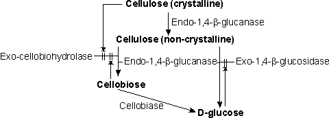

Enzyme Technology
Glucose from cellulose
There is very much more cellulose available, as a
potential source of glucose, than starch, yet cellulose is not a significant
source of pure glucose. The reasons for this are many, some technical, some
commercial. The fundamental reason is that starch is produced in relatively pure
forms by plants for use as an easily biodegradable energy and carbon store.
Cellulose is structural and is purposefully combined and associated with lignin
and pentosans, so as to resist biodegradation; dead trees take several years to
decay even in tropical rainforests. A typical waste cellulolytic material
contains less than half cellulose, most of the remainder consisting of roughly
equal quantities of lignin and pentosans. A combination of enzymes is needed to
degrade this mixture. These enzymes are comparatively unstable of low activity
against native lignocellulose and subject to both substrate and product
inhibition. Consequently, although many cellulolytic enzymes exist and it is
possible to convert pure cellulose to glucose using only enzymes, the cost of
this conversion is excessive. The enzymes might be improved by strain selection
from the wild or by mutation but problems caused by the physical nature of
cellulose are not so amenable to solution. Granular starch is readily stirred in
slurries containing 40% (w/v) solids and is easily solubilised but, even when
pure, fibrous cellulose forms immovable cakes at 10% solids and remains
insoluble in all but the most exotic (and enzyme denaturing) solvents. Impure
cellulose often contains almost an equal mass of lignin, which is of little or no
value as a by-product and is difficult an expensive to remove.
Commercial cellulase preparations from Trichoderma reesei
consist of mixtures of the synergistic enzymes:
- cellulase (EC 3.2.1.4), an endo-1,4-D b-glucanase;
- glucan 1,4-b-glucosidase (EC 3.2.1.74), and
exo-1,4-b-glucosidase; and
- cellulose 1,4-b-cellobiosidase (EC 3.2.1.91), an
exo-cellobiohydrolase (see Figure 4.4).
They are used for the removal of
relatively small concentrations of cellulose complexes which have been found to
interfere in the processing of plant material in, for example, the brewing and
fruit juice industries.

Figure 4.4. Outline of the relationship between the enzyme
activities in the hydrolysis of cellulose. || represents inhibitory effects.
Endo-1,4-b-glucanase is the rate-controlling activity and may consist of a
mixture of enzymes acting on cellulose of different degrees of crystallinity. It
acts synergistically with both exo-1,4-b-glucosidase and exo-cellobiohydrolase.
Exo-1,4-b-glucosidase is a product-inhibited enzyme. Exo-cellobiohydrolase is
product inhibited and additionally appears to be inactivated on binding to the
surface of crystalline cellulose.
Proper economic analysis reveals that cheap sources of
cellulose prove to be generally more expensive as sources of glucose than
apparently more expensive starch. Relatively pure cellulose is valuable in its
own right, as a paper pulp and chipboard raw material, which currently commands
a price of over twice that of corn starch. With the increasing world shortage of
pulp it cannot be seen realistically as an alternative source of glucose in the
foreseeable future. Knowledge of enzyme systems capable of degrading
lignocellulose is advancing rapidly but it is unlikely that lignocellulose will
replace starch as a source of glucose syrups for food use. It is, however, quite
possible that it may be used, in a process involving the simultaneous use of
both enzymes and fermentative yeasts, to produce ethanol; the utilisation of the
glucose by the yeast removing its inhibitory effect on the enzymes. It should be
noted that cellobiose is a non-fermentable sugar and must be hydrolysed by
additional b-glucosidase (EC 3.2.1.21, also called cellobiase for maximum
process efficiency (Figure 4.4).
Home
| Back | Next
This page was established in 2004 and last updated by Martin
Chaplin
on
6 August, 2014
|